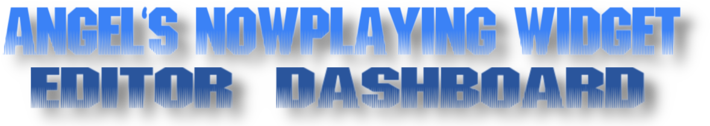
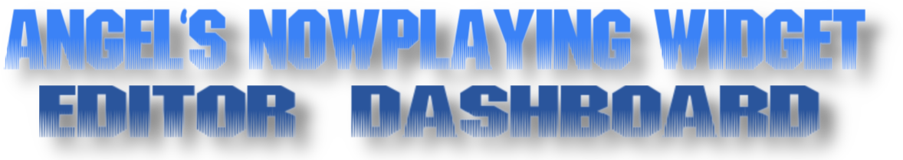

Configure Tuna to output the files Artist.txt, Track.txt, and Artwork.png into the root directory of the widget folder. Some template files have already been added in the root directory so that you will know where to place them.
Open the built-in overlay editor by clicking the Edit buttons for each template in the editor dashboard. The color provided in the frame editor will match the color to use for the progress bar in obs.
To add a widget to your OBS scene, create a new Browser Source, select the Local File option, and point it to the corresponding HTML file for your chosen template.
Set the resolution in OBS to match the dimensions shown on the editor page for the selected template.
Adjust the Browser Source settings as needed, such as enabling Shutdown source when not visible to save resources.
Ensure the widget is positioned correctly in your OBS scene, and test it by playing audio through Tuna.
You can color match the progress bar by adding the tuna progress bar source in OBS and setting the color to match what the template editor listed on the screen. Layer the progress bar behind the transparent portion of the widget to complete the effect.
Important Notes
Local File Playback: This widget has been tested primarily with local audio files played via VLC integration inside OBS with Tuna v1.9.9. To use local music, add your music directory as a VLC Video Source in OBS (not a Media Source). Only VLC Video Sources currently work with Tuna for local playback.
Current Status: Only Template 1 is fully functional at the moment. Other templates are under development and may not render correctly.
Future Features
Support for additional media sources like Spotify, YouTube Music, and Apple Music (as Tuna compatibility allows).
Improved configuration editor with images and step-by-step instructions directly accessible inside the editor.
Consolidation to a single JSON data source for easier setup and more robust syncing.
Thank you for trying out Angels NowPlaying Widget! Your feedback and contributions are welcome on GitHub.
 
